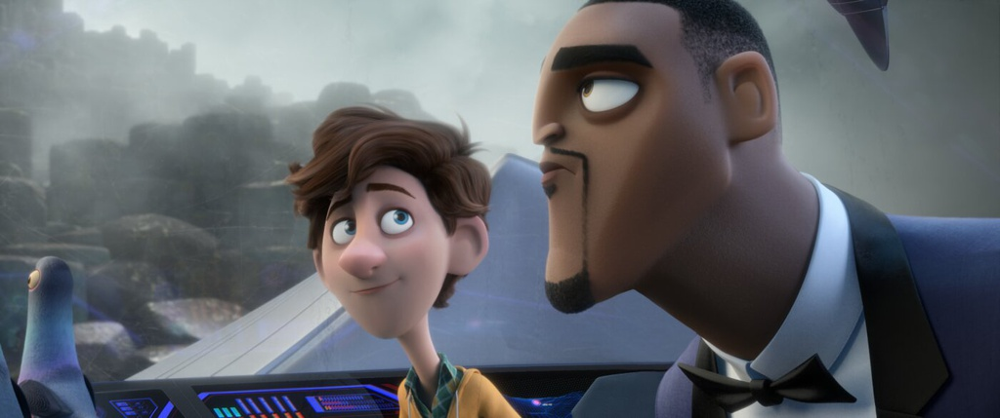
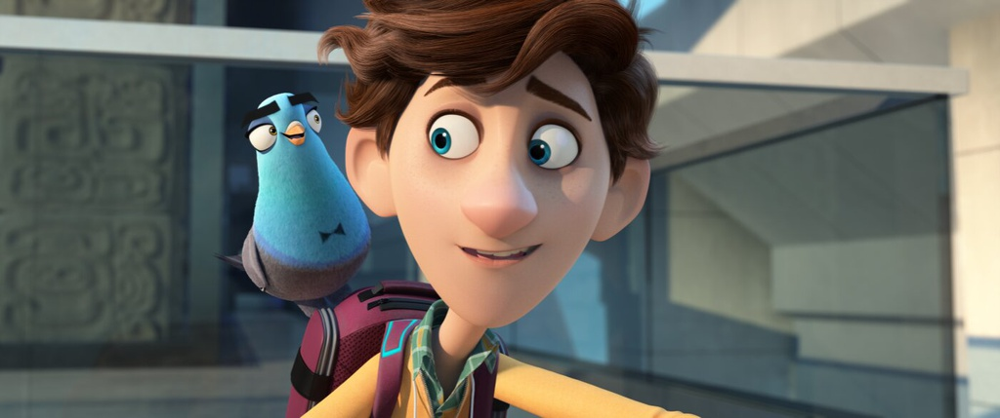

Spies in Disguise khai thác rất tốt yếu tố giải trí đến từ sự trái tính trái nết của hai nhân vật chính. Từ một siêu điệp viên, Lance Sterling giờ đây mắc kẹt trong lốt bồ câu yếu đuối, vô dụng. Tuy nhiên, anh vẫn giữ quen thói kiêu căng và “hành hạ” Walter Beckett bằng hàng loạt câu thoại dí dỏm.

Hai nhân vật chính do Tom Holland và Will Smith lồng tiếng có nhiều nét trái ngược.
Trong khi đó, cậu chuyên viên vũ khí vốn hậu đậu nay phải tiến ra thực địa nên đụng đâu hỏng đó. Những phát minh của Walter thể hiện sự sáng tạo của ê-kíp khi lồng ghép nhiều xu hướng hiện đại trên mạng xã hội. Từ đây, tác phẩm mang đến tiếng cười nhờ hàng loạt màn tranh cãi hay tình huống oái oăm của “bộ đôi hoàn cảnh”.
Will Smith và Tom Holland có nhiều lần tung hứng ăn ý trong lần đầu kết hợp, một phần vì tạo hình và tính cách của Lance Sterling và Walter Beckett như được đo ni đóng giày cho bộ đôi diễn viên lồng tiếng. Smith vốn là ngôi sao hàng đầu tại Hollywood, còn Holland luôn gắn liền với hình ảnh đáng yêu, hay ngại ngùng trước công chúng dù đã nổi danh. Ngoài ra, Spies in Disguise còn khéo léo biến những tập tính bình thường của loài bồ câu trở nên “lầy lội” hơn. Lance Sterling phải làm quen với nhiều điểm khác biệt của loài chim như thích ăn đồ thừa, nhìn được 360 độ cùng lúc… Qua đó, đàn bồ câu trong phim tuy không có lời thoại nhưng vẫn “chiếm sóng” nhờ vẻ ngoài dễ thương, hành động khó đỡ.

Hàng loạt tình huống hài hước nảy sinh sau khi Lance bị hóa thành chim bồ câu.
Nhìn chung, Spies in Disguise là một bộ phim hoạt hình điệp viên đủ tính giải trí và hấp dẫn. Tuy nhiên, phim chỉ mang đến tiếng cười, chứ khó để lại nhiều cảm xúc cho khán giả sau khi khép lại.
Phim đang được trình chiếu trên toàn quốc dưới tựa đề Điệp viên ẩn danh.